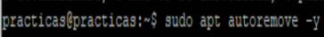
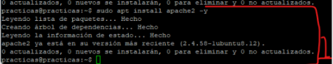
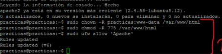
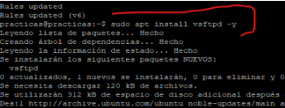
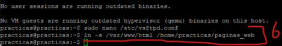
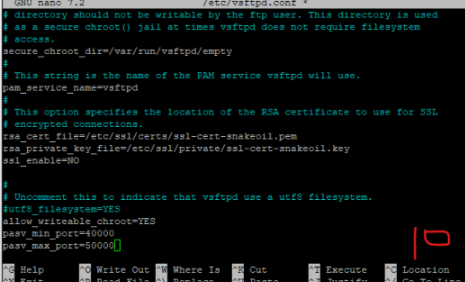
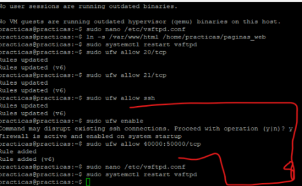
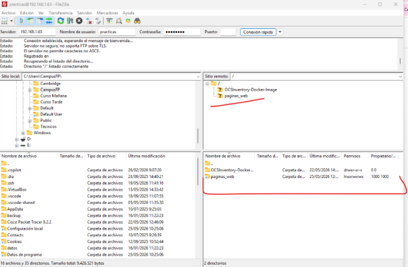
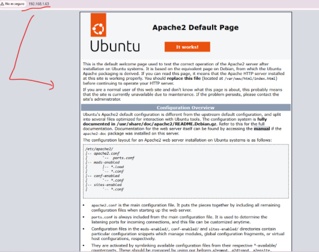

Introducción
En esta actividad se configuró el servidor Dell Wyse como un sistema multipropósito capaz de ofrecer servicios web y transferencia de archivos.
Para ello se utilizaron Apache2, vsftpd y el firewall UFW de Ubuntu Server.
Instalación de Apache2
El primer paso consistió en instalar el servidor web Apache2 utilizando el gestor de paquetes APT.
Antes de instalar los paquetes, se realizó una limpieza del sistema para evitar conflictos con instalaciones previas.
sudo apt autoremove -y
sudo apt install apache2 -y


Asignación de permisos web
Por defecto, la carpeta web de Apache pertenece al usuario administrador.
Para permitir la subida y modificación de archivos desde FTP, se modificaron los permisos del directorio /var/www/html.
sudo chown -R practicas:www-data /var/www/html
sudo chmod -R 775 /var/www/html

Instalación de VSFTPD
Posteriormente se instaló el servidor FTP vsftpd (Very Secure FTP Daemon).
Este servicio permite transferir archivos entre cliente y servidor de forma ligera y eficiente.
sudo apt install vsftpd -y

Configuración de seguridad FTP
El archivo principal de configuración fue editado utilizando Nano:
sudo nano /etc/vsftpd.conf
Durante la configuración:
- Se deshabilitó el acceso anónimo
- Se habilitó acceso a usuarios locales
- Se permitió escritura
- Se activó el aislamiento chroot
También se añadió:
allow_writeable_chroot=YES
para evitar errores de conexión FTP.
Creación del enlace simbólico
Se creó un enlace simbólico entre la carpeta web de Apache y el directorio del usuario local.
Esto permitió subir archivos web cómodamente mediante FTP.
ln -s /var/www/html /home/practicas/paginas_web

Configuración de puertos pasivos
FTP utiliza puertos dinámicos en modo pasivo para transferencias.
Por ello se configuró un rango de puertos específico dentro del archivo vsftpd.conf.
pasv_min_port=40000
pasv_max_port=50000
Finalmente se reinició el servicio:
sudo systemctl restart vsftpd

Configuración del firewall UFW
Se activó el firewall UFW permitiendo únicamente los puertos necesarios.
- Apache (80)
- SSH (22)
- FTP (20 y 21)
- Puertos pasivos FTP
sudo ufw allow Apache
sudo ufw allow ssh
sudo ufw allow 20/tcp
sudo ufw allow 21/tcp
sudo ufw allow 40000:50000/tcp
sudo ufw enable

Conexión FTP con FileZilla
Desde un equipo cliente se realizó la conexión remota utilizando FileZilla Client.
Se introdujeron:
- IP del servidor Wyse
- Usuario practicas
- Contraseña
- Puerto 21
La conexión fue exitosa y se visualizaron correctamente los directorios remotos.

Validación del servidor web
Finalmente se comprobó el correcto funcionamiento del servidor Apache desde otro equipo de la red local.
Se accedió mediante navegador introduciendo la IP estática del servidor Ubuntu.
http://192.168.1.63
El servidor respondió correctamente mostrando la página por defecto de Apache2.
